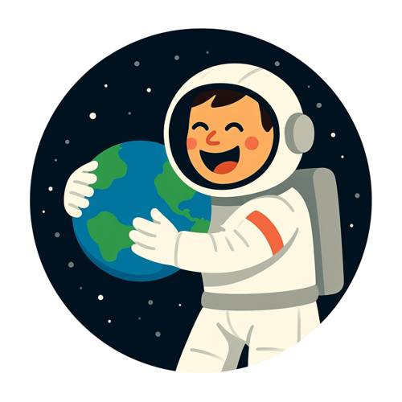
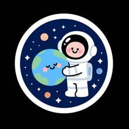
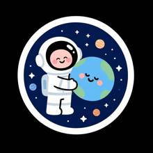

Entity Layout — A flat-style badge design shows a happy astronaut hugging a small plan
A flat-style badge design shows a happy astronaut hugging a small planet on the left. They all smile and the background is the deep universe.

Direct — one call, no iterationContinuum — Kimi K3 + Qwen-Image
Judge — Direct
PASSEntity Layout - Two-Dimensional Space — The image features a central composition within a circular frame. An astronaut is holding a small planet, which is positioned to the left of the astronaut's torso.
PASSStyle — The image is rendered in a flat style, characterized by solid fields of color, simple shapes, and minimal shading. The circular format of the illustration gives it the appearance of a badge.
FAILGrammar - Consistency — The astronaut is depicted with a wide, open-mouthed smile. The planet, which is a representation of Earth, does not have a facial expression and is not smiling.
PASSAction - Contact Interaction — The astronaut's arms are wrapped around the planet, holding it close to their body, which clearly depicts the action of hugging.
PASSAttribute - Expression — The astronaut is shown with a wide, open-mouthed smile and crinkled eyes, which conveys a happy expression.
Judge — Continuum
PASSEntity Layout - Two-Dimensional Space — The image shows a cartoon astronaut holding a small planet. Both figures are positioned towards the left side within the circular frame of the badge.
PASSStyle — The image is rendered in a flat style, characterized by simple shapes, solid colors, and bold outlines, and is presented within a circular frame with a white border, consistent with a badge design.
PASSGrammar - Consistency — Both the astronaut and the planet depicted have faces with smiling expressions, featuring curved mouths and upturned, closed eyes.
PASSAction - Contact Interaction — The astronaut's arms are wrapped around the planet, holding it close to its body, which visually represents the action of hugging.
PASSAttribute - Expression — The astronaut has a face with a smiling mouth, closed, upturned eyes, and rosy cheeks, which conveys a happy expression.
What the agent did
Thinking
The user wants a flat-style badge design with a happy astronaut hugging a small planet on the left, both smiling, with a deep universe background. Let me generate this using qwen-image as per the benchmark policy. Let me craft a detailed prompt: - Flat vector illustration style - Circular badge design - Happy cute astronaut hugging a small planet - Astronaut on the left side - Both astronaut and planet have smiling faces - Deep universe background (dark space with stars) Let me generate.
Step 1 — `generate_image`
{
"prompt": "Flat vector-style circular badge design, sticker aesthetic with a thick white border ring. Inside the badge: a cute happy cartoon astronaut in a white spacesuit standing on the left side, arms wrapped around hugging a small smiling planet. The astronaut has a big joyful smile visible through the round glass helmet. The small planet is a round sphere with a cute smiling face with closed happy eyes. Deep universe background inside the badge: dark navy blue space filled with small white stars, tiny sparkles, and a few small distant planets. Bold clean outlines, limited flat color palette, minimal shading, kawaii illustration style, centered composition.",
"model": "qwen-image"
}
Result img_0

Thinking
The generated image shows a cute flat-style circular badge with: - A happy astronaut (smiling, blush cheeks) hugging a small planet (Earth with a smiling face) - Deep navy universe background with stars and small planets - White border ring around the badge However, the prompt says "astronaut hugging a small planet on the left" — the astronaut should be on the left. In the current image, the astronaut is on the RIGHT and the planet is on the LEFT. The user's prompt: "a happy astronaut hugging a small planet on the left" — this is a bit ambiguous. It could mean: 1. The astronaut is on the left hugging a small planet 2. The astronaut hugs a small planet that is on the left Reading: "a happy astronaut hugging a small planet on the left" — most natural reading: the astronaut hugging a small planet, [the astronaut] on the left. Or the whole scene placed on the left. Given the phrasing, the astronaut should be on the left side of the composition. In the current image, the astronaut is on the right and the planet on the left. So I should edit to swap their positions: astronaut on the left, planet on the right. Let me do an edit: "swap the positions: place the astronaut on the left side of the badge and the smiling planet on the right side, astronaut hugging the planet." Actually, let me think about whether this edit will work well with qwen-image edit. Swapping positions is a structural change but edit_image can handle it. Let me try. Also there's a black background outside the badge — that's fine for a badge design presentation, though maybe the badge on black is fine. The user says "background is the deep universe" — that refers to inside the badge. The current badge interior has deep universe. Good. Let me mark this as a candidate first, then attempt the swap edit. Per policy, mark early. img_0 is decent but has the astronaut on the right, contrary to the prompt. I'll mark it anyway as a fallback, then edit.
Step 2 — `mark_best`
{
"image": "img_0",
"reason": "Good flat-style badge with smiling astronaut hugging a smiling planet and deep-universe background; only issue is astronaut is on the right instead of the left."
}
Step 3 — `edit_image`
{
"image": "img_0",
"prompt": "Swap the positions of the two characters: place the happy white-suited astronaut on the left side of the badge and the small smiling blue-green planet on the right side, with the astronaut's arms still wrapped around the planet in a hug. Keep the same flat vector style, faces, colors, stars, and deep navy space background.",
"model": null
}
Result img_1

Thinking
Now the astronaut is on the left, hugging the small smiling planet on the right. The image has: - Flat-style circular badge with white border ✓ - Happy astronaut on the left, smiling with blush cheeks ✓ - Astronaut's arms wrapped around the small planet in a hug ✓ - Small planet with a smiling face ✓ - Deep universe background (navy with stars, small planets) ✓ Everything the prompt asks for is present and correct. Let me verify details with a quick inspection — the faces look fine. The astronaut has a cute smile, the planet has closed happy eyes and a smile. Composition is good. Let me zoom in on the faces just to double check there are no artifacts... The image looks clean at full scale. The style is consistent flat vector. I think this is good enough — mark it as best and stop. Actually, let me quickly inspect the face regions to make sure nothing is off. The planet face: two closed eyes and a mouth — looks fine. The astronaut face: smile, blush — fine. Per stopping policy: good enough is a stop condition. Mark img_1 as best and report.
Model
The swap worked cleanly. Let me verify the faces up close, then finalize.
The second crop shows the astronaut's face clearly: cute closed-eye smile with blush cheeks, clean flat rendering, no artifacts. The first crop was off-target (badge edge), but the full image already shows everything clearly. Let me quickly check the planet's face too — actually from the full view it looked fine: closed happy eyes and a smiling mouth with blush. The style is consistent. Everything the prompt asks for is present: - Flat-style badge design ✓ - Happy astronaut hugging a small planet, astronaut on the left ✓ - Both smile ✓ - Deep universe background ✓ I'll mark img_1 as best and stop. Good enough is a stop condition.
Step 6 — `mark_best`
{
"image": "img_1",
"reason": "Astronaut now correctly on the left hugging the small smiling planet; both characters smile, flat badge style with deep-universe background \u2014 matches the prompt fully."
}
Model
Done! The final badge design includes everything you asked for: - **Flat-style circular badge** with a thick white border ring - **Happy astronaut on the left**, with a big smile and rosy cheeks visible through the helmet - **Small smiling planet** (a cute Earth-like sphere with closed happy eyes and a grin) being hugged by the astronaut's wrapped arms - **Deep universe background** — dark navy space scattered with white stars, sparkles, and tiny distant planets The whole design uses a clean kawaii flat-vector aesthetic with bold outlines and a limited color palette, perfect for a badge or sticker.